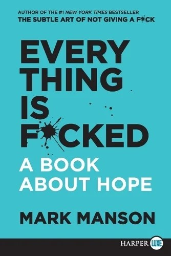

About
Independent developer in London. Bikes, books, and building small things.
Short version
I'm Amish. I build small software products in London, mostly on my own. Started taking it seriously in MMXXVI when I shipped NotchWise. Currently splitting time between four live products and two healthcare SaaS apps in development.
Currently
Last updated · April MMXXVI
Reading. Two very different books on roughly the same question.
Riding. A Honda CB650R (e-clutch, black). London commutes mostly, with the occasional out-of-town run when the weather permits.
Learning from. A short list, not a long one. The accounts whose absence from my feed I'd actually notice.
Working on. Two healthcare SaaS apps, deep in build mode. One is currently being tested in Docker before it goes to Azure. Both are quiet for now.
Running my brain on. Notion, daily. It's the second brain I actually open.
Riding
I passed my test in October MMXXIV and bought my first bike a year later: a Honda CB650R, the e-clutch model, in black. The bike was a selfish purchase. Something for me, something that lets me switch off from the rest of the world. When I need to clear my head, two wheels does it better than anything else I've tried, and the trade-offs aren't even close.

Had my first drop early this year, which was as annoying as you'd expect. It also gave me something useful: the realisation that you can't fully control these things, and that a set of frame sliders earns its place fast. The confidence came back faster than I expected.
If you're thinking about getting into riding yourself, I wrote up the gear I bought, the gear I'm still buying, and a few things I'd tell myself before my first lesson.
Elsewhere
The site has a writing section with build notes on most of the projects, a uses page if you want to know what I build with, and an RSS feed for the writing. For anything else, email me.